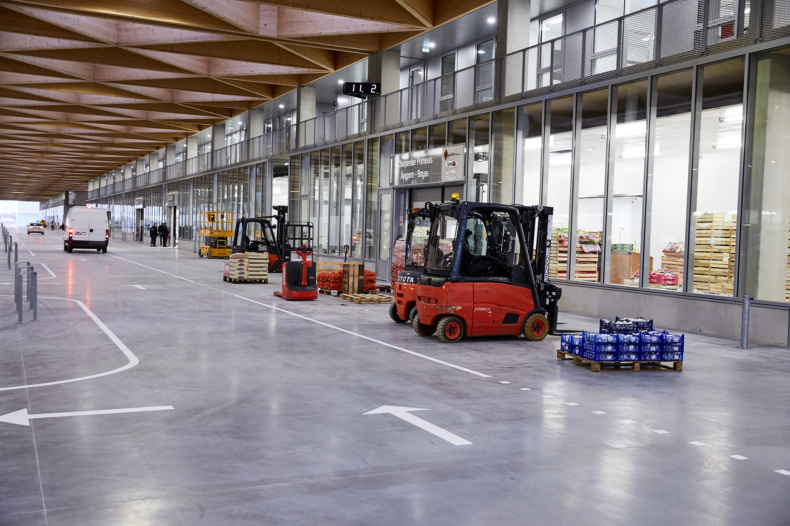

/// 6 Mar 2026 ///
Photographe corporate à Nantes — Portraits et reportages d'entreprise

Nantes est le deuxième pôle économique du Grand Ouest. Sièges sociaux, start-ups de la French Tech, ETI industrielles, cabinets de conseil, institutions publiques : la métropole concentre des acteurs qui ont tous besoin d’images professionnelles pour exister dans un univers où la communication visuelle est devenue incontournable.
La photo corporate à Nantes recouvre des besoins très variés — et souvent sous-estimés jusqu’au moment où l’on en manque.
Les principales missions corporate à Nantes
Portraits de dirigeants et de collaborateurs Un portrait professionnel de qualité est aujourd’hui indispensable pour LinkedIn, le site institutionnel, la presse économique régionale (Ouest France Économie, Le Journal des Entreprises, Échos Nantes Métropole) et les supports de communication internes. Je réalise des portraits en studio mobile ou en lumière naturelle, seuls ou en série pour toute une équipe — avec une cohérence graphique garantie d’un portrait à l’autre.
Reportages d’équipes et de locaux Votre site web doit montrer vos équipes, vos espaces, votre culture d’entreprise. Les photos de stock ne convainquent plus personne. Un reportage réalisé dans vos bureaux, vos ateliers ou vos espaces de coworking produit des images authentiques qui renforcent votre marque employeur et votre crédibilité commerciale.
Événements d’entreprise Séminaires, inaugurations, assemblées générales, remises de prix, journées portes ouvertes : un photographe corporate capte les moments clés pour alimenter vos réseaux sociaux, vos newsletters et vos archives internes.

Ce qui distingue un photographe corporate compétent
La photographie corporate est une discipline à part entière. Elle exige :
- La rapidité : vos dirigeants et collaborateurs ont peu de temps. Une séance portrait doit produire des résultats utilisables en 20 à 30 minutes.
- La direction de modèles : la majorité des gens ne savent pas naturellement comment se positionner face à un objectif. Mettre à l’aise, diriger subtilement, tirer le meilleur d’une expression — c’est le coeur du métier.
- La cohérence de série : si vous photographiez vingt collaborateurs sur trois jours, les portraits doivent former un ensemble homogène en termes de lumière, de cadrage et de fond.
- La discrétion : dans un contexte événementiel ou de reportage d’entreprise, le photographe doit être capable de travailler sans perturber le déroulement des activités.
Mon approche à Nantes
Basé à Montaigu-Vendée, j’interviens régulièrement à Nantes et dans toute la métropole pour des missions corporate. Le trajet depuis ma base en Vendée est de 45 minutes, ce qui me permet de répondre rapidement à des demandes urgentes — portrait de dernière minute avant un salon, reportage d’inauguration.
Je dispose d’un studio mobile complet — fond, éclairage, réflecteurs — que j’installe directement dans vos locaux. Aucun déplacement de vos équipes n’est nécessaire. Je peux également travailler en lumière naturelle si vos espaces s’y prêtent.
Parmi mes clients nantais : Virage Group, Port de Nantes-Saint-Nazaire, Université de Nantes. Mes portraits ont été publiés dans le Financial Times, Ouest France et Les Échos.

Ce que je livre
- Fichiers haute résolution retouchés (étalonnage, recadrage, correction lumière)
- Versions web optimisées pour LinkedIn, site institutionnel et presse
- Délai de livraison : 48 à 72 h pour les portraits, une semaine pour les reportages
Voir la page Nantes — Portraits corporate — Demander un devis